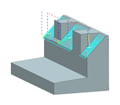

In the Operation Navigator, right click FIXED_CONTOUR and choose Tool Path→Tilt Tool Axis.
In the Tilt Tool Axis dialog box, review some of the parameters.
The default parameters are adequate for this operation.
In the Tilt group, clear the Maintain Current Tilt between Collisions check box.
Click Ok.
Notice the Status line. It informs you of the tool axis tilt calculation. For complex tool paths, this calculation could take a few moments to complete.
In the Tool path generate message box, click Yes.

The tool path is displayed.